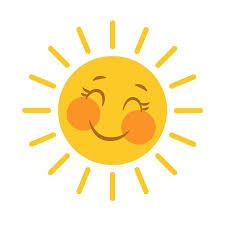
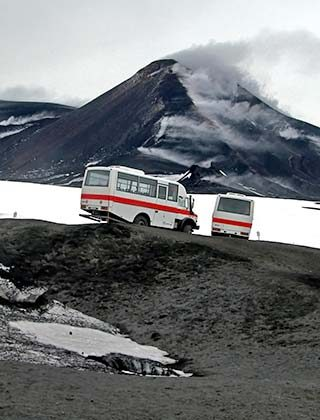
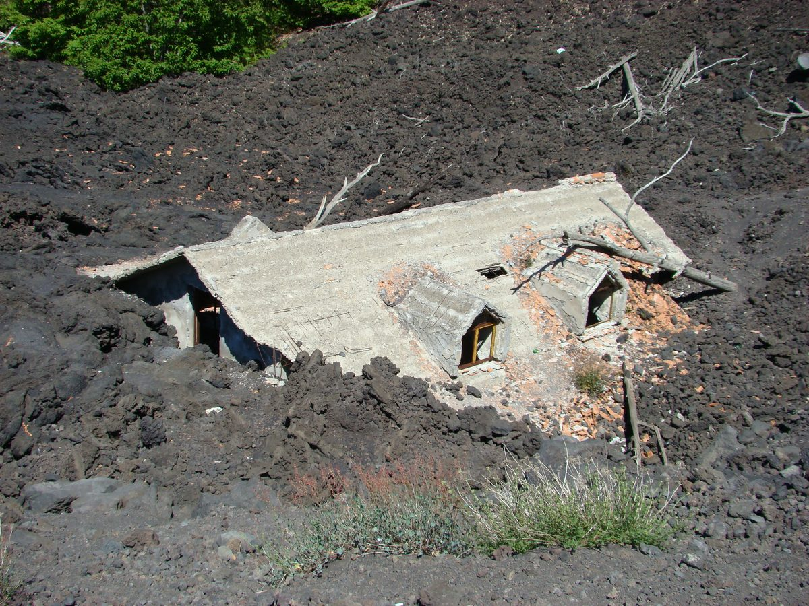
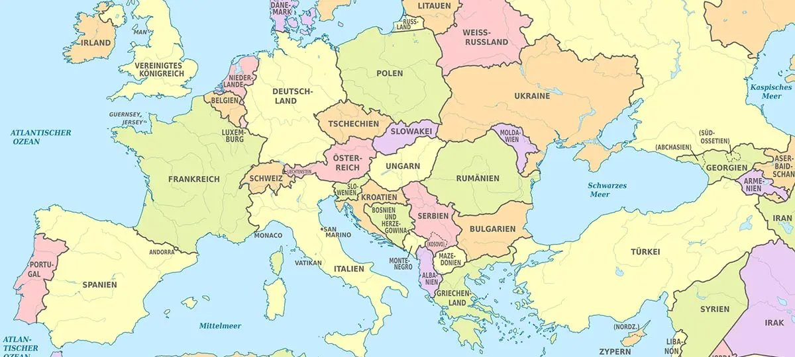
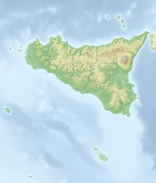
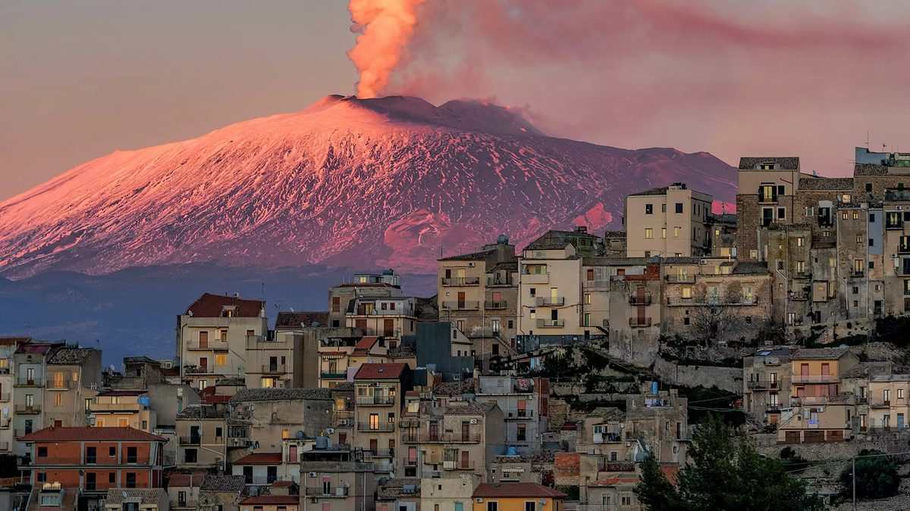
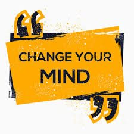
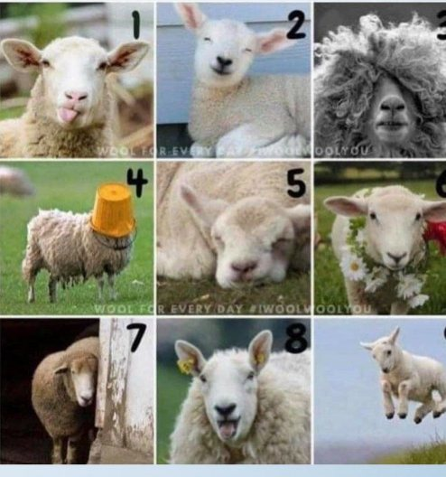

Guten Morgen! Los geht’s.
Aussage aus der letzten Stunde:
„Am Ätna kann man keine Landwirtschaft betreiben. Die Lava zerstört alles.“
Erkläre, warum die Aussage nicht ganz stimmt. Nenne eine Chance und ein Risiko für die Landwirtschaft am Ätna.
Chance: Asche und Lava machen den Boden fruchtbar. Seit über 2 000 Jahren wird dort angebaut.
Risiko: Ausbrüche können Felder und Häuser zerstören.
Zwei Fotos, ein Berg


Was fällt euch auf?
Unsere Frage für heute
Welche Frage stellt sich euch zu den Fotos? Sammelt Fragen und einigt euch auf eine.
Wo liegt der Ätna?
Lokalisiere den Ätna. Nenne Land, Insel und Meer.



Urlaub auf dem Vulkan?
Würdet ihr hier Urlaub machen? Setzt ein Kreuz.
Partnerpuzzle
Einzelarbeit. Gruppe A: Chancen (M1–M4). Gruppe B: Risiken (M4–M7). Entnimm 3–4 Stichpunkte.
Vierergruppe. Erkläre deine Stichpunkte. Ergänze die andere Spalte.
Urteil. Beurteile den Tourismus am Ätna. Kreuz auf der Linie und Begründung.
Arbeitsblatt in drei Niveaus: ●○○ · ●●○ · ●●● . Nimm das Blatt, das zu dir passt.
Allein am Material
Entnimm deinem Material 3–4 Stichpunkte.
Gruppe A: Chancen (M1–M4) · Gruppe B: Risiken (M4–M7)
Tipp: Markiere pro Absatz 1–2 Schlüsselwörter.
Erklärt euch eure Spalten
Reihum: Jede Person erklärt ihre Stichpunkte.
Ergänzt die andere Spalte in eurer Tabelle.
Vergleicht: Welche zwei Punkte sind für euch am wichtigsten?
Die große Tabelle
Chancen
Risiken
Bleibt ihr bei eurer ersten Meinung?

Chance oder Risiko?
Beurteile den Tourismus am Ätna. Setze dein Kreuz neu und begründe mit zwei Punkten aus der Tabelle.
Satzbausteine: Ich sehe den Tourismus eher als Chance / Risiko, weil … · Ein wichtiger Punkt ist … · Dagegen spricht, dass …
Das schreibe ich ins Heft
Beschreibe in zwei bis drei Sätzen den Tourismus am Ätna.
Der Tourismus am Ätna ist eine Chance, weil …
Er ist aber auch ein Risiko, weil …
Ich beurteile ihn eher als …, weil …
Abschlussrunde
Ordne dich einem Bild zu und begründe deine Entscheidung. Wähle dann einen Satzanfang und beende ihn.
